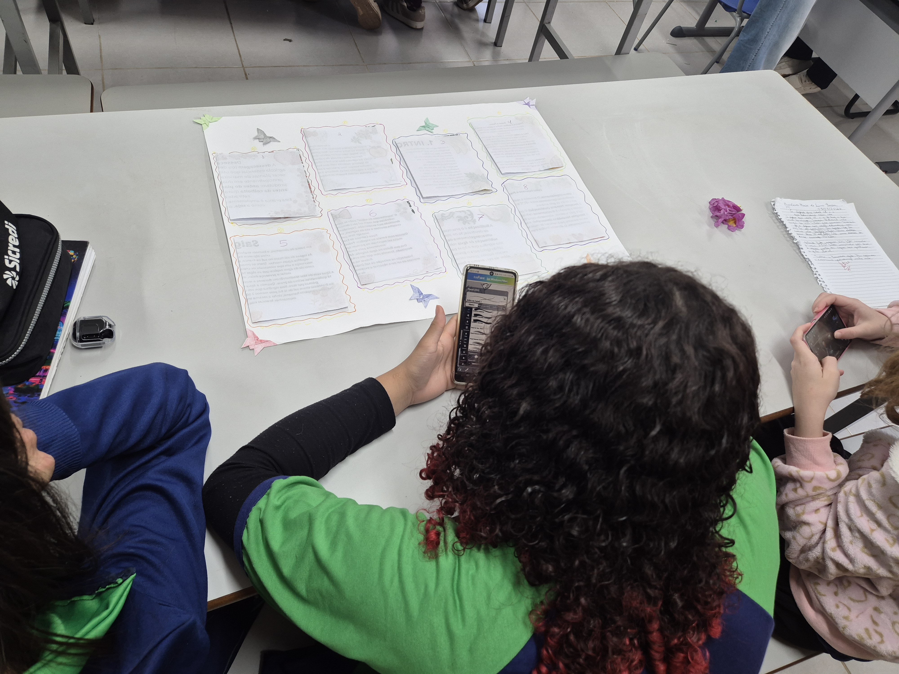
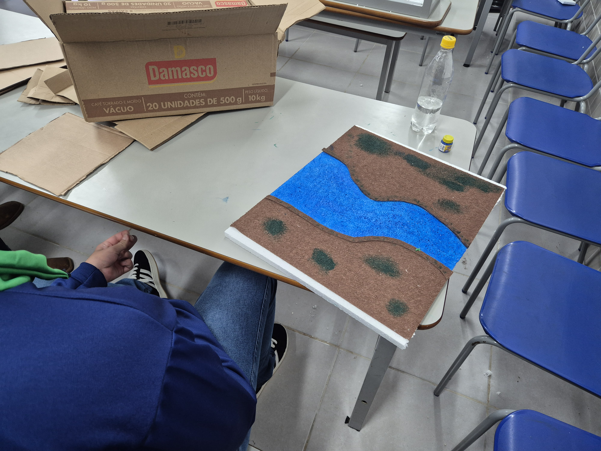
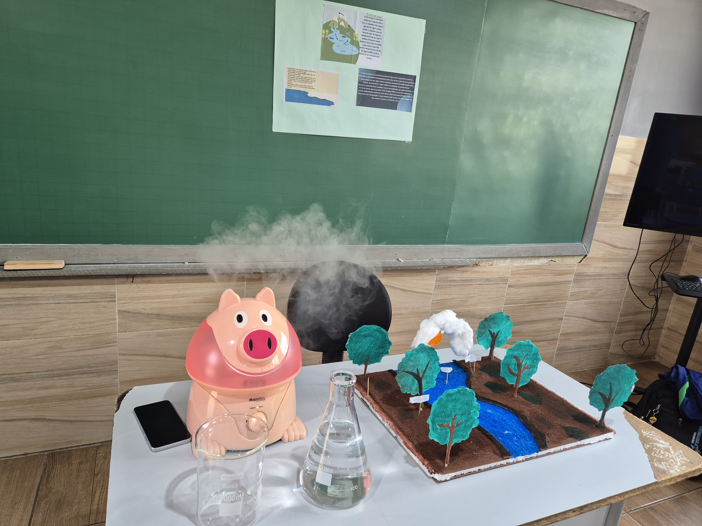
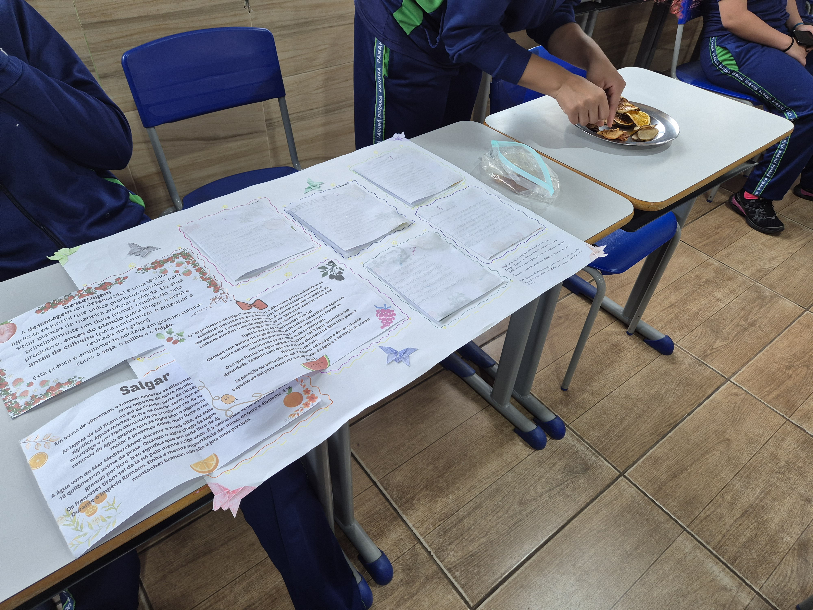

Programação
Atividades relacionadas às tecnologias digitais, programação, desenvolvimento de páginas web, pesquisa digital, inteligência artificial e utilização das tecnologias no processo de aprendizagem.

Colégio Estadual Professor Gabriel Rosa
Este espaço apresenta projetos, conhecimentos e experiências relacionados aos componentes de Física e Tecnociência, Programação e Robótica, desenvolvidos no ambiente escolar.
Conheça o projetoO Ciêntificando com IFAS é um projeto desenvolvido no Colégio Estadual Professor Gabriel Rosa, em Curiúva – Paraná, que busca aproximar os estudantes da ciência, da tecnologia e da produção de conhecimentos a partir de experiências realizadas no ambiente escolar.
Os estudantes participaram de diferentes propostas, desenvolvendo pesquisas, experiências, produções digitais, projetos tecnológicos e atividades colaborativas.
O trabalho possibilitou que os alunos utilizassem as tecnologias digitais não apenas como ferramentas de pesquisa, mas também como recursos para criar, produzir, organizar, comunicar conhecimentos e desenvolver soluções.
O Colégio Estadual Professor Gabriel Rosa está localizado no município de Curiúva, no estado do Paraná, tendo como Diretora a professora Cristiene Bertani. A escola constitui um espaço de aprendizagem, desenvolvimento de projetos e construção do conhecimento.
Por meio das atividades relacionadas à ciência, tecnologia e inovação, os estudantes têm a oportunidade de relacionar os conhecimentos escolares com situações presentes em seu cotidiano.
Os alunos do Colégio Estadual Professor Gabriel Rosa estiveram envolvidos em diferentes projetos desenvolvidos no âmbito do IFA, participando de propostas de pesquisa, produção de conhecimento, tecnologia, sustentabilidade, programação, robótica e outras áreas.
As turmas participaram de diferentes atividades e projetos, organizadas em grupos de trabalho. Cada equipe ficou responsável por uma etapa, pesquisa ou produção, contribuindo para o desenvolvimento das propostas realizadas durante o percurso.
A organização coletiva possibilitou a divisão das tarefas e favoreceu a participação dos estudantes em diferentes momentos: pesquisa, seleção de informações, produção textual, experimentação, programação, construção de projetos e apresentação dos resultados.
Embora os estudantes tenham participado de diferentes projetos do IFA, é importante destacar que este site científico pertence especificamente aos componentes de:
Atividades relacionadas às tecnologias digitais, programação, desenvolvimento de páginas web, pesquisa digital, inteligência artificial e utilização das tecnologias no processo de aprendizagem.
Estudos e experiências envolvendo ciência, tecnologia e sociedade, resolução de problemas, investigação científica e atividades de Tecnociência desenvolvidas no ambiente escolar.
Desenvolvimento de projetos envolvendo programação, automação, sensores, construção de protótipos e criação de soluções para problemas do cotidiano.
Os estudantes do Colégio Estadual Professor Gabriel Rosa também estiveram envolvidos em diferentes projetos do IFA, ampliando suas experiências em diversas áreas do conhecimento.
Esses projetos fazem parte da trajetória formativa dos estudantes, porém não constituem áreas deste site científico. O conteúdo apresentado neste espaço está direcionado exclusivamente aos componentes de Física e Tecnociência, Programação e Robótica.
Entre as diferentes experiências vivenciadas pelos estudantes, destaca-se a participação no componente de Sociologia I: Governo, Cidadania e Sociedade, por meio do Projeto Integrador Literatura e Sociedade.
Como resultado desse percurso, os estudantes produziram uma revista digital, reunindo pesquisas, painéis, linhas do tempo e infográficos sobre diferentes formas de intelectualidade, valorizando trajetórias, conhecimentos e vozes que contribuíram para transformar a sociedade. Para acessar a Revista Digital basta clicar no QrCode abaixo ⬇

Revista digital – Tecendo Intelectualidades: Produção dos estudantes no Projeto Integrador Literatura e Sociedade.
Observação: a Sociologia I é apresentada nesta página apenas como registro de uma das experiências formativas realizadas pelos estudantes. Ela não constitui uma das áreas do site científico.
Registros das atividades, projetos e experiências desenvolvidos pelos estudantes do Colégio Estadual Professor Gabriel Rosa.
A galeria reúne momentos relacionados ao IFA Resolução de Problemas, às atividades de Tecnociência, Sustentabilidade e à Feira de Ciências com o tema Água.






Ciência, tecnologia, criatividade e aprendizagem fazendo parte da experiência escolar.
Uso consciente e criativo das tecnologias, pesquisa digital, programação, inteligência artificial e cidadania digital.
Saiba mais →Relações entre ciência, tecnologia e sociedade, buscando compreender como o conhecimento científico participa da transformação do mundo.
Saiba mais →Construção de projetos, automação, sensores, programação e desenvolvimento de soluções para problemas do cotidiano.
Saiba mais →